User Guide¶
What is gitgauge?¶
gitgauge is a desktop application for Teaching Assistants (TAs) to assess individual contributions in student group coding projects. By analysing Git repository history, it provides:
- Clear contribution summaries
- Visual insights and timelines
- AI-generated commit analysis
- Ready-to-export grading sheets
All data stays on your machine. No setup headaches, no cloud sync.
Features¶
- Import local or remote Git repositories (with optional PAT for private repos)
- View per-student contribution breakdowns with visual dashboards
- Use regex filters to refine commit analysis
- Upload a configuration file to map multiple contributor emails to one student
- Generate AI summaries using Gemini
- Export scaled grading data to CSV for upload to Monash Moodle
Note
gitgauge is intended for Teaching Assistant (TA) use only.
Before You Start¶
Generate an API Key (OPTIONAL)¶
If you want AI-generated commit summaries:
- Visit: https://aistudio.google.com/app/apikey
- Sign in with a Google account
- Click “Create API Key”
- Assign the key to a Cloud Project
- Copy the key and paste it into gitgauge when prompted
Note
AI summaries are optional. gitgauge works fully without Gemini.
Warning
Gemini API tokens are not stored and only used for the current session.
Example Scenario¶
You are grading a group project for FIT3170. The group has pushed their work to a GitHub repository. You want to assess individual contributions.
Here’s the process:
- Launch gitgauge.
- Import the repository.
- Upload a configuration file linking students to multiple emails.
- Filter out unhelpful commits (e.g. formatting).
- Review the AI summaries.
- Upload the grading sheet.
- Export the final scaled CSV.
Step By Step Workflow¶
1. Launch gitgauge¶
Start the app from your desktop.
2. Import a Repository¶
- Enter a Git URL into the text box
- If importing a private repository, enter your Personal Access Token (PAT) when prompted

Fig. 1a – Importing a public Git repository
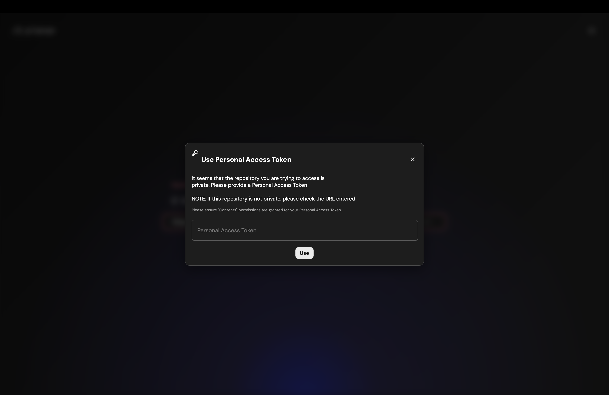
Fig. 1b – Importing a private Git repository using PAT
3. Link Disparate Emails to Contributor (OPTIONAL)¶
Students often commit using different emails. To group them correctly:
- Click “Upload Config File”
- Upload a
.jsonfile mapping alternate emails to the student’s full name / identifier
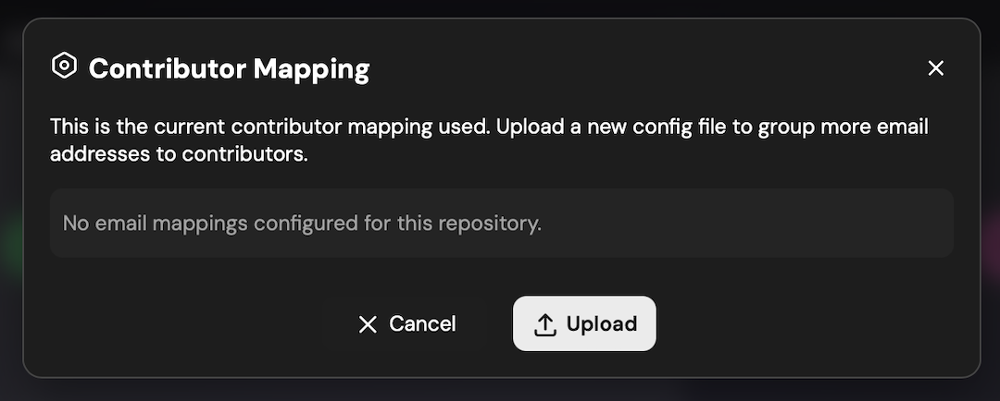
Fig. 2a – Empty configuration modal
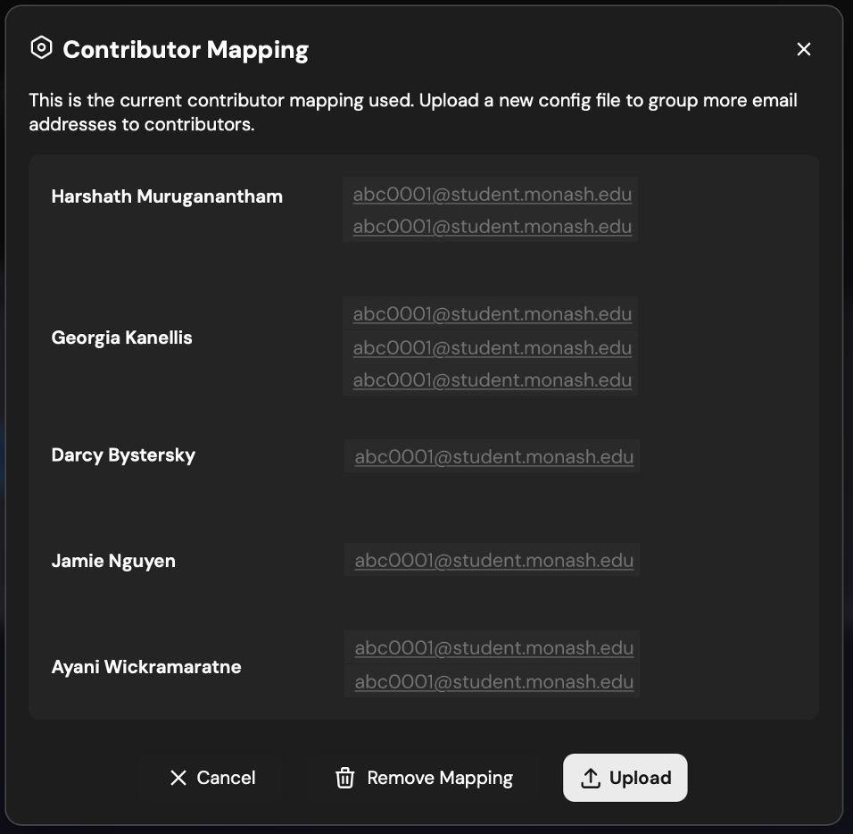
Fig. 2b – Configuration with mapped contributors
Warning
Only contributors listed in the config file will be included in the analysis and export. Unmapped commit emails are ignored entirely.
TEMPLATE AVAILABLE: See Example Config in the repo.
4. Explore the Visual Dashboard¶
- See visualisations of contributions:
- Commit timelines
- Code churn over time
- Metric-based breakdowns
- Apply regex filters to ignore noise (e.g. “typo”, “test commit”)
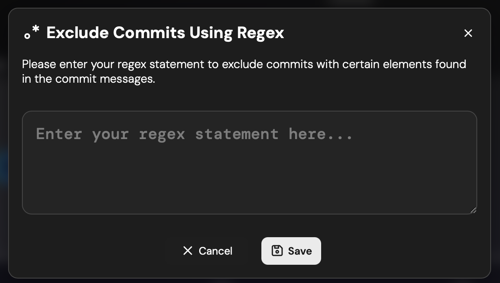
Fig. 3a – Add regex filter to refine analysis
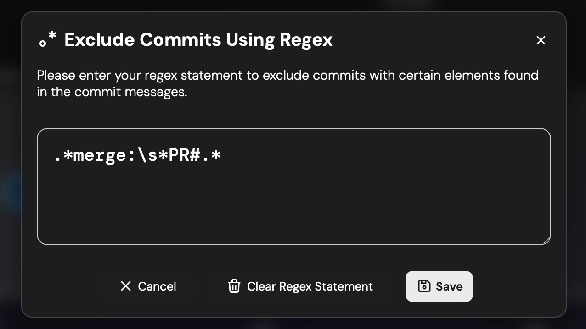
Fig. 3b – Example regex filter: exclude 'fix', 'format'
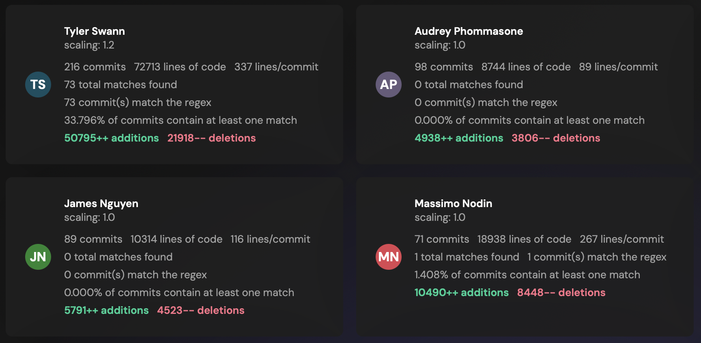
Fig. 3c – Filtered view with irrelevant commits removed
Tip
Try */merge: PR#.* to exclude merge commits as a test.
5. Review Contributor Overview¶
- View:
- Total commits
- Lines of code added/removed
- Contribution weighting by metric

Fig. 4a – Overview of all contributors
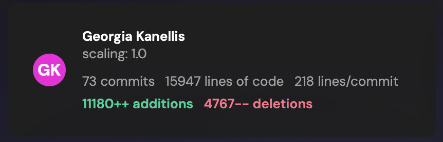
Fig. 4b – Individual contributor performance
6. View AI Generated Analysis¶
- Open the “AI Analysis” tab
- Review summaries of:
- Commit patterns
- Effort distribution
- Highlights or red flags
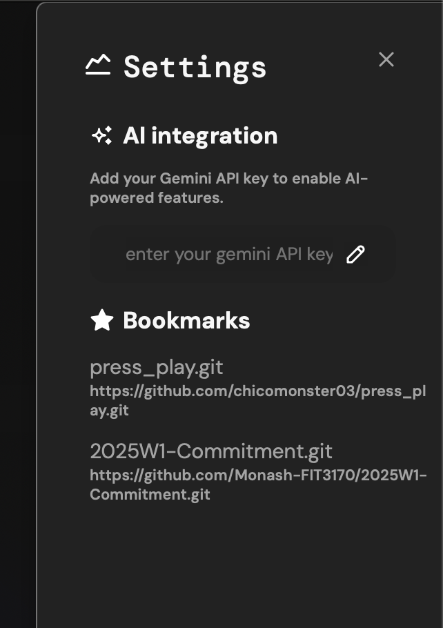
Fig. 5a – Enter Gemini API key
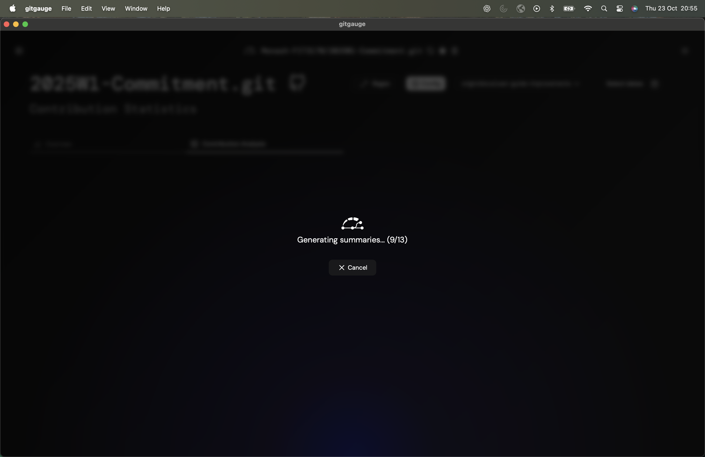
Fig. 5b – Generating AI summaries
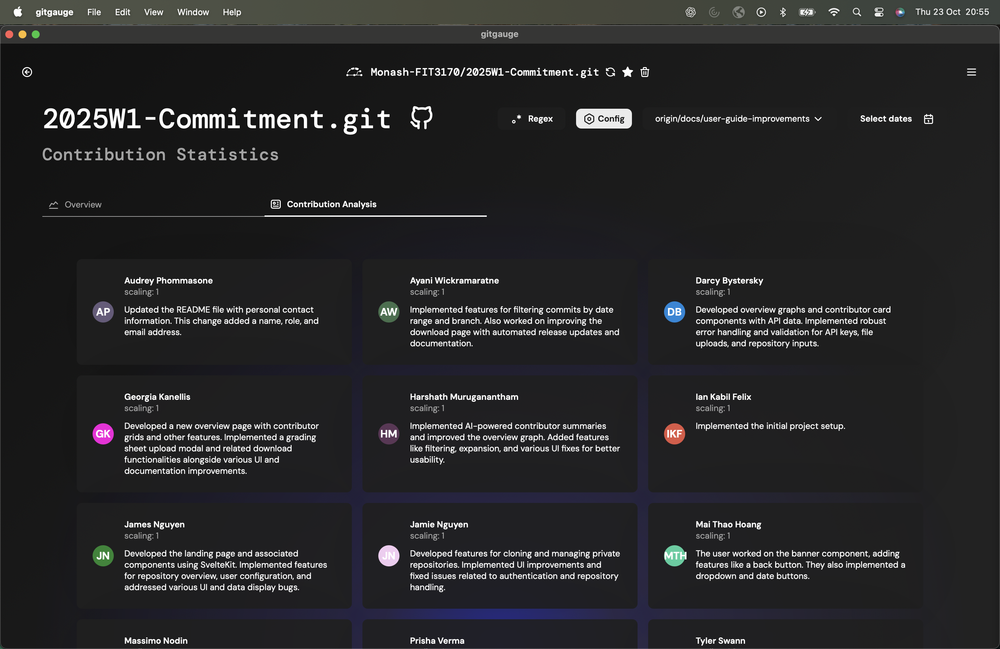
Fig. 5c – Completed AI Summary per contributor
7. Upload Grading Sheet and Export¶
- Upload a CSV with student emails
- gitgauge matches contributors to the grading sheet
- Export final results as a CSV file
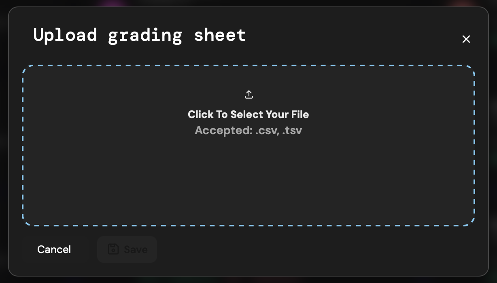
Fig. 6a – Upload grading sheet
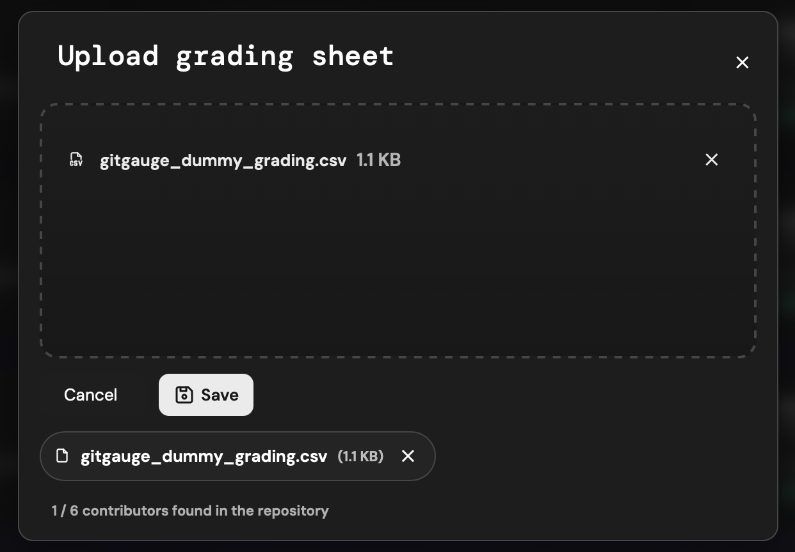
Fig. 6b – Review mapped grading
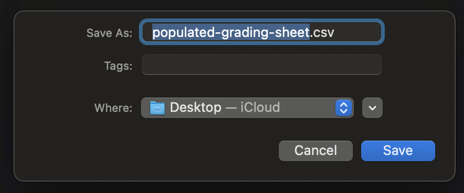
Fig. 6c – Export results
Contributor Configuration File¶
Use a .json file to group all known emails under a single student identity.
Example Config Format¶
{
"Student Full Name 1": [
"student1@university.edu",
"alt1@gmail.com",
"alt2@users.noreply.github.com"
],
"Student Full Name 2": [
"student2@university.edu"
]
}
Warning
- Only mapped contributors are included in contribution analysis
- Emails not in the configuration will not be shown or included in stats
- Unlinked commits are silently ignored
How To Obtain Contributor Emails¶
OPTION 1: Ask Students to Submit All Potential Contributing Emails¶
git config user.email
OPTION 2: Extract From Git Log¶
git log --format='%ae' | sort | uniq
Handling Missing Contributor Cases¶
| Contributor in Repository | Contributor in Grading Sheet | Contributor in Config File | Outcome |
|---|---|---|---|
| Yes | Yes | Yes | Student receives a scaled grade based on their contributions using the selected metric and branch. |
| No | Yes | Yes | Student appears in the grading sheet but has made no commits. They receive "NA" in the scaled mark output. |
| Yes | No | Yes | Contributor is not listed in the grading sheet and is assumed to be outside the analysed cohort. Their data is ignored in the export. |
| Yes | Yes | No | Contributor’s commits are found, but their email is not mapped in the configuration file. These commits are ignored and not shown as separate contributors. |
Privacy and Security¶
- gitgauge runs 100% locally
- No data is uploaded or synced
- Repositories are auto-deleted after 30 days
- PATs and Gemini tokens are never stored
Reminder
Always obtain student consent before analysis.
Troubleshooting & FAQ¶
Q: The AI summary isn’t loading
A: Check your Gemini API key and verify your usage quota.
Q: A contributor shows up twice
A: Use the configuration file to group all their email addresses.
Q: A student isn’t appearing in the outputted grading sheet
A: Their email may be missing from the configuration file or inputted grading CSV.